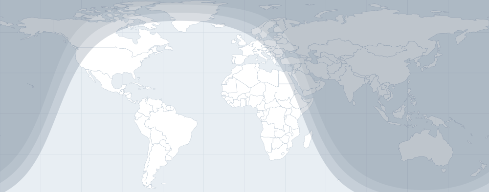

MAQUETA — todas las cifras, recintos, personas y estados son ficticios, solo para mostrar el diseño
DGSMH · Cancillería del EcuadorSeguimiento de la jornada electoral en el exterior
Domingo 29-11-202610:00 Quito · 15:00 UTC
Ana R. · DGSMH
Mapa mundial · consulados
Zona sombreada: noche ahora. La hora de cada recinto sale de su huso horario.

Al díaIncidencia o pendiente reportadoSolicitud urgente de apoyoSin información (alerta de seguimiento)Número = varios consulados del país
Consolidado por consulado
Consulado
Hora local
Recintos
Fase
JRV al día
Votantes
Estado
El informe distingue datos confirmados, estimados, pendientes y sin reporte. No contiene resultados de votos ni datos internos de Madrid (credenciales, ingresos o pagos).